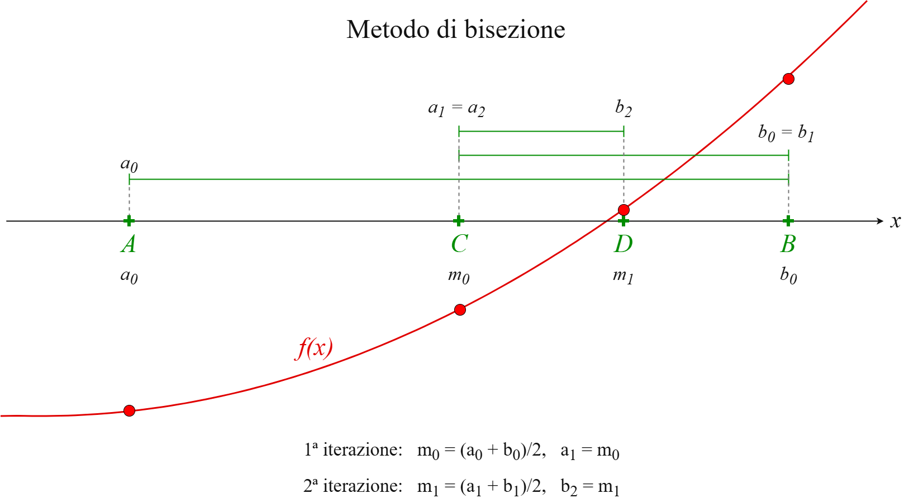
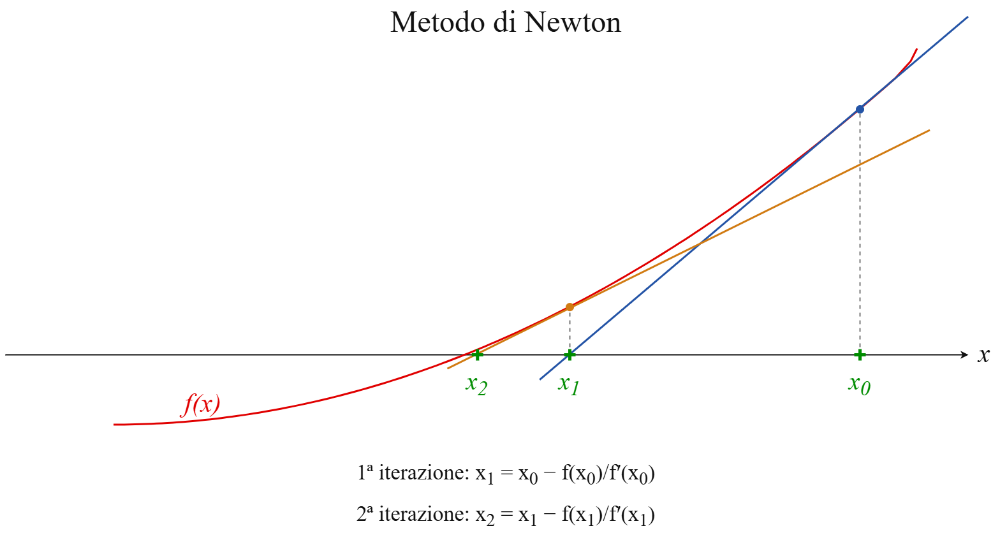
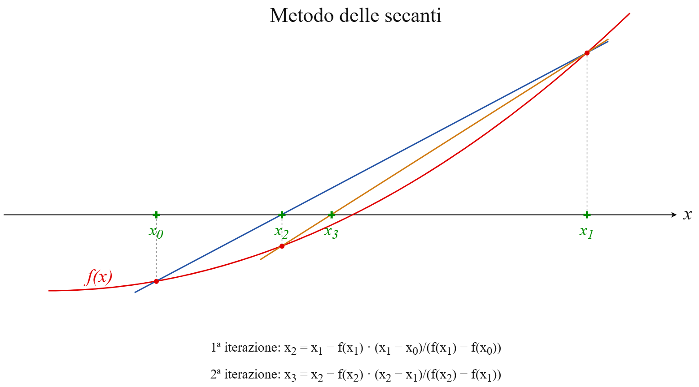
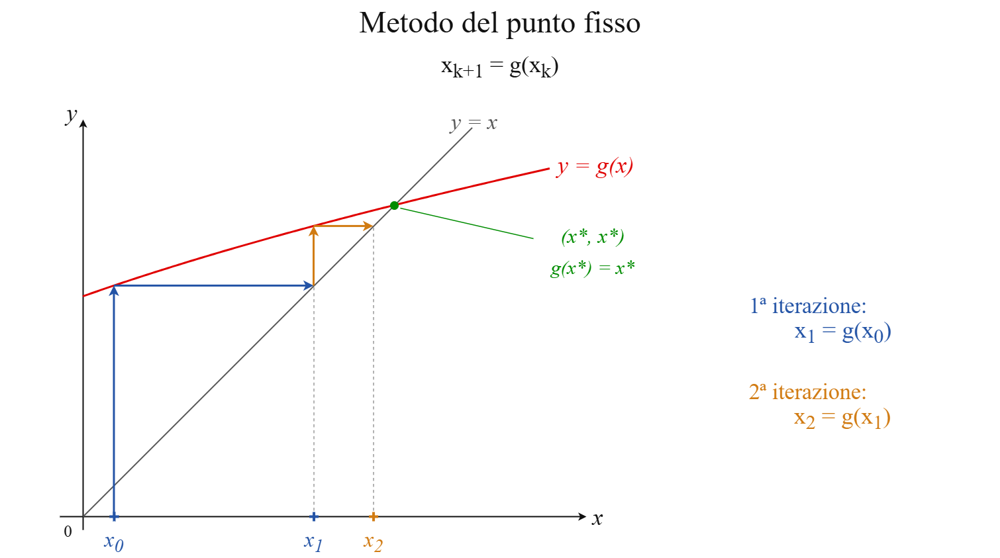

Homework 2: risoluzione di equazioni non lineari#
Data una funzione non lineare \(f:\mathbb{R}\to\mathbb{R}\), vogliamo determinare le radici dell’equazione \(f(x)=0\), dette anche zeri della funzione, cioè i valori \(x^*\) tali che
A seconda della funzione, possono non esistere zeri reali, essercene uno solo, un numero finito oppure infiniti.
I metodi numerici iterativi consentono di approssimare uno zero costruendo una successione di valori \(x_k\). Il procedimento viene ripetuto fino a soddisfare un opportuno criterio di arresto.
Esercizio 1) Caso con zero semplice#
Definire la funzione \(f(x)=(4x-7)/(x-2)\) e calcolarne la derivata. Poi:
calcolare (a mano) lo zero
x_star;plottare \(f(x)\) nell’intervallo \([1, 1.9]\) e individuare graficamente lo zero;
implementare il metodo di bisezione e i metodi di Newton e delle secanti in modo che stampino ad ogni iterazione il punto \(x_k\) calcolato e il valore della funzione in quel punto.
Per il metodo di bisezione:
lanciare il metodo di bisezione per la ricerca dello zero tra
a=1eb=1.9;memorizzare punti medi e ampiezze degli intervalli ad ogni iterazione;
provare le tolleranze
tolpari a \(10^{-4}, 10^{-8}, 10^{-12}\);confrontare le approssimazioni iterative con la stima teorica
x_star.
Per il metodo di Newton:
lanciare il metodo di Newton con \(x_0 = 1.9\), poi testare \(x_0 = {1, 1.5, 1.6}\);
provare le tolleranze
tolpari a \(10^{-4}, 10^{-8}, 10^{-12}\);confrontare le approssimazioni iterative con la stima teorica
x_stare plottare come si riduce l’errore di approssimazione.
Per il metodo delle secanti:
implementare e lanciare il metodo delle secanti con \(x_0 = 1\) e \(x_1 = 1.9\);
provare diversi input per \(x_0\) e \(X_1\), tipo \(x_0 = 1\) e \(x_1 = 1.8\);
provare le tolleranze
tolpari a \(10^{-4}, 10^{-8}, 10^{-12}\);confrontare le approssimazioni iterative con la stima teorica
x_stare plottare come si riduce l’errore di approssimazione.
NB:
Che tipi di errori si ottengono? A cosa sono dovuti?
Fra i metodi testati, quale metodo converge più rapidamente a parità di tolleranza? Quali informazioni richiede in cambio?
Esercizio 2) Caso con zeri multipli#
Definire la funzione \(f(x)=(x+1)^4 (x-3)\) e calcolarne la derivata. Poi:
calcolare (a mano) gli zeri \(x^*\) di \(f\) e determinarne la molteplicità;
plottare la funzione in \([-3, 3.5]\) e individuare graficamente gli zeri;
provare il metodo di bisezione settando \(a, b\) opportunamente;
provare il metodo Newton con \(x_0=-2\) e \(x_0=4\);
confrontare le soluzioni ottenute e analizzare se si trovano tutti gli zeri con ciascun metodo;
per il metodo di bisezione, analizzare la convergenza;
per il metodo di Newton, confrontare i rapporti fra gli errori \(e_k = |x^* - x_k|\) compiuti rispetto alle soluzioni esatte, stampando per ciascuna risoluzione
Esercizio 3) Metodo del punto fisso#
Definire la funzione \(f(x)=x e^x - 1\) che ha soluzione in \(x^* = 0.5671\) circa. Considerare le funzioni ausiliarie:
\(g_1(x) = e^{-x}\)
\(g_2(x) = \frac{1+x}{1+e^x}\)
\(g_3(x) = x + 1 -xe^x \)
Poi:
verificare che \(x^*\) approssima uno zero di \(f\) e rappresenta un punto fisso delle funzioni ausiliarie;
plottare \(f\) e le tre funzioni ausiliarie, identificando \(x^*\) in ciascun grafico;
usare l’algoritmo del punto fisso per ciascuna funzione ausiliaria con \(x_0 = 0.5\);
confrontare le soluzioni ottenute e il numero di iterazioni effettuate;
definire le derivate delle tre funzioni ausiliarie e calcolarne il valore in \(x^*\);
confrontare gli errori \(e_k = |x^* - x_k|\) compiuti rispetto a \(x^*\) in ciascun caso: cosa se ne deduce?
RECAP 1#
import numpy as np
import matplotlib.pyplot as plt
eps = np.finfo(float).eps
print(eps)
2.220446049250313e-16
Metodo di bisezione#
Richiede una funzione continua in \([a,b]\) con \(f(a)\cdot f(b)<0\).
A ogni iterazione si calcola il punto medio
e si conserva la metà dell’intervallo in cui la funzione cambia segno. Se \(f(m)=0\), il metodo termina.
NB:
Garantisce la convergenza sotto le ipotesi indicate.
Dimezza l’ampiezza dell’intervallo a ogni iterazione.
L’errore del punto medio è al più metà dell’ampiezza dell’intervallo corrente.

def bisezione(f, a, b, tol=1e-12, max_iter=100):
fa = f(a)
fb = f(b)
iterati = []
# Controllo degli estremi
if fa * fb > 0:
raise ValueError("La funzione deve cambiare segno in [a, b].")
if fa == 0:
return a, 0, iterati
if fb == 0:
return b, 0, iterati
for k in range(1, max_iter + 1):
# Punto medio e valore della funzione
m = (a + b) / 2
fm = f(m)
# Memorizzo l'approssimazione corrente
iterati.append(m)
# Criterio di arresto
if abs(b - a) / 2 <= tol + eps * min(abs(a), abs(b)) or fm == 0:
print("Raggiunto il criterio di arresto.")
return m, k, iterati
# Seleziono il sottointervallo con cambio di segno, per la prossima iterazione
if fa * fm < 0:
b = m
else:
a = m
fa = fm
print("Raggiunto il numero massimo di iterazioni.")
return m, k, iterati
Metodo di Newton#
A partire da un punto iniziale \(x_0\), si calcola $\( x_{k+1}=x_k-\frac{f(x_k)}{f'(x_k)}. \)$
Il nuovo iterato è l’intersezione della tangente al grafico in \((x_k,f(x_k))\) con l’asse delle ascisse.
NB:
Richiede la derivata prima.
Per uno zero semplice, con sufficiente regolarità e un punto iniziale abbastanza vicino, la convergenza è quadratica.
Può fallire se la derivata si annulla o il punto iniziale non è adeguato.
Per zeri multipli, la convergenza è generalmente lineare.

def newton(f, df, x0, tol_x=1e-12, tol_f=1e-14, max_iter=100):
x = x0 # x = float(x0)
iterati = [x]
print(f"k = 0, x = {x:.15f}, f(x) = {f(x):.3e}")
# Controllo del punto iniziale
if abs(f(x)) <= tol_f:
return x, 0, iterati
for k in range(1, max_iter + 1):
fx = f(x)
dfx = df(x)
# Controllo della derivata
if dfx == 0:
raise ValueError("Derivata nulla: impossibile proseguire.")
# Nuova approssimazione
x_nuovo = x - fx / dfx
print(f"k = {k:2d}, x = {x_nuovo:.15f}, f(x) = {f(x_nuovo):.3e}")
iterati.append(x_nuovo)
# Incremento e residuo
incremento = abs(x_nuovo - x)
residuo = abs(f(x_nuovo)) # sarebbe: abs(f(x_nuovo) - f(x_star)) = abs(f(x_nuovo) - 0)
# Criteri di arresto
if incremento <= tol_x + eps * min(abs(x_nuovo), abs(x)) or residuo <= tol_f:
print("Raggiunto un criterio di arresto.")
return x_nuovo, k, iterati
# Aggiornamento per la prossima iterazione
x = x_nuovo
print("Raggiunto il numero massimo di iterazioni.")
return x, max_iter, iterati
Metodo delle secanti#
A partire da due punti iniziali \(x_0,x_1\), si calcola $\( x_{k+1} =x_k-f(x_k)\frac{x_k-x_{k-1}}{f(x_k)-f(x_{k-1})}. \)$
La derivata è sostituita dalla pendenza della secante passante per gli ultimi due punti del grafico.
Non richiede il calcolo della derivata.
Vicino a uno zero semplice, sotto opportune ipotesi, ha convergenza superlineare.
Non garantisce la convergenza e può incontrare un denominatore nullo.

def secanti(f, x0, x1, tol_x=1e-12, tol_f=1e-14, max_iter=100):
x_prec = float(x0)
x = float(x1)
iterati = [x_prec, x]
f_prec = f(x_prec)
fx = f(x)
print(f"k = -1, x = {x_prec:.15f}, f(x) = {f_prec:.3e}")
print(f"k = 0, x = {x:.15f}, f(x) = {fx:.3e}")
# Controllo dei punti iniziali
if abs(f_prec) <= tol_f:
return x_prec, 0, [x_prec]
if abs(fx) <= tol_f:
return x, 0, iterati
for k in range(1, max_iter + 1):
# Controllo del denominatore
denominatore = fx - f_prec
if denominatore == 0:
raise ValueError("Denominatore nullo: impossibile proseguire.")
# Nuova approssimazione
x_nuovo = x - fx * (x - x_prec) / denominatore
f_nuovo = f(x_nuovo)
iterati.append(x_nuovo)
print(f"k = {k:2d}, x = {x_nuovo:.15f}, f(x) = {f_nuovo:.3e}")
# Incremento e residuo
incremento = abs(x_nuovo - x)
residuo = abs(f_nuovo)
# Criteri di arresto
if incremento <= tol_x + eps * min(abs(x_nuovo), abs(x)) or residuo <= tol_f:
print("Raggiunto un criterio di arresto.")
return x_nuovo, k, iterati
# Aggiorno i due punti e i valori della funzione
x_prec = x
f_prec = fx
x = x_nuovo
fx = f_nuovo
print("Raggiunto il numero massimo di iterazioni.")
return x, max_iter, iterati
RECAP 2#
Il metodo del punto fisso riscrive l’equazione \(f(x)=0\) utilizzando una funzione ausiliaria di iterazione \(g(x)\), che può essere ad esempio costruita come \(g(x) = x - \frac{f(x)}{h(x)}\).
Scelto un punto iniziale \(x_0\), si vuole risolvere \(x=g(x)\) costruendo la successione
Se gli iterati convergono a \(x^*\) e se \(g\) è continua, allora \(x^*=g(x^*)\) e abbiamo trovato un punto fisso di \(g\): grazie al legame fra \(g\) e \(f\), abbiamo trovato anche uno zero di \(f\).
NB: La scelta di \(g\) è fondamentale! Riscritture della stessa equazione possono produrre metodi convergenti oppure divergenti. Una condizione sufficiente per la convergenza locale è
con \(g\) continuamente derivabile vicino al punto fisso \(x^*\) e \(x_0\) sufficientemente vicino a esso.

def punto_fisso(g, x0, tol_x=1e-12, max_iter=100):
x = x0
iterati = [x]
# Controllo del punto iniziale
tol_f = tol_x
if abs(g(x)-x0) <= tol_f:
return x, 0, iterati
for k in range(1, max_iter + 1):
# Nuova approssimazione
x_nuovo = g(x)
iterati.append(x_nuovo)
# Criterio di arresto
if abs(x_nuovo - x) <= tol_x + eps * min(abs(x_nuovo), abs(x)):
print("Raggiunto il criterio di arresto.")
return x_nuovo, k, iterati
x = x_nuovo
print("Raggiunto il numero massimo di iterazioni.")
return x, max_iter, iterati